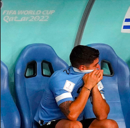
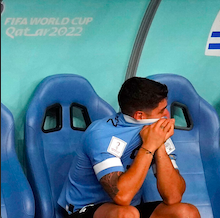

"ARGENTINA TAKES THE TROPHY HOME"
December 18,2022 was the day which will conclude which country would win the world cup. The day was filled with tension as the Question remained to be answer "Who Would Win World Cup 2022". It was the day Argentina and France would battle for the World Cup Trophy.
As the Match Continue Argentina scored 2 goals in the first half leaving France in the dangerzone. As the Second half began France shocked everyone by finding a penalty which Kylian Mbappé scored a goal. Not even 2 minutes after that Kylian Mbappé scored another goal making it 2 nill and equalising it with Argentina. Argentina scores another goal getting Argentina up on the lead again, until Kylian Mbappé scored another goal equalising with Argentina once again.
Both teams were now in tension as the end of second half came the both teams were equal on 3-3 nill. Argentina and France played Extra time two halfs and still was equal. It was the moment of truth when the both teams went into Penalties. As both team scored france missed a shot, and letting the keeper catch the ball letting Argentina win the World Cup 2022.
.jpeg)
Argentina Today gets to bring the Trophy Home. which gives them a big honour. Ending the World Cup as the Winner as Lionel Messi From Argentina. Kylian Mbappé Winning the golden Boot and Keeper Martinez from Argentina Winning the golden gloves.
.jpeg)

It was most unexpected win in the World Cup. Today Messi and his Team mates will celebrate and they will take home the World Cup 2022 Trophy. Ending this World Cup which mentioning it as the most Emotional, Amazing and most expensive world Cup in Football history.

 

We saw Neymar trying to get his nation to the top, We Saw Ronaldo trying to get his world cup on the top and we saw Messi win the world cup. It was truly an Amazing world cup and question remains "WIll the world cup 2026 be as legendary and fantastic as this world Cup?" or "Will Ronaldo and Messi still be competing again in the world cup 2026?"..